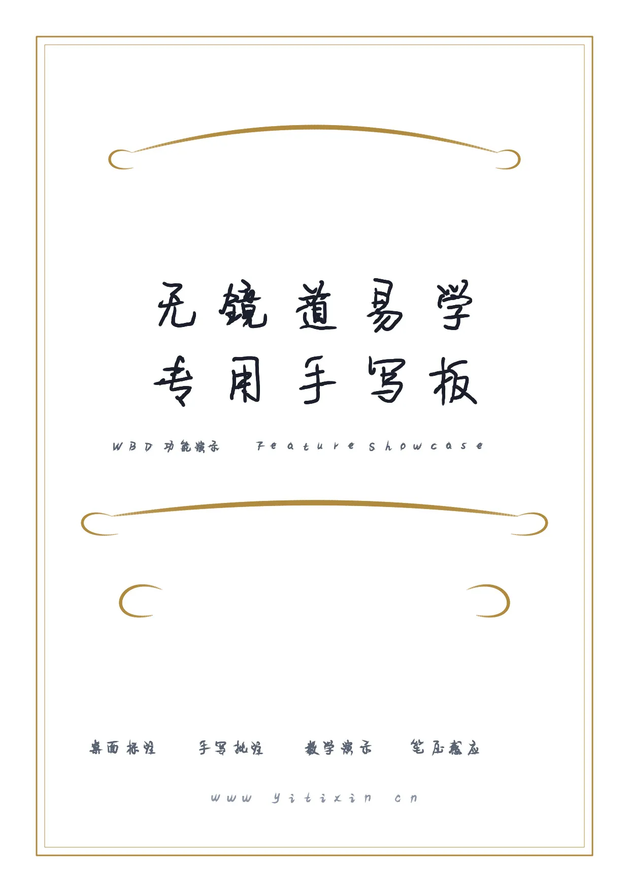
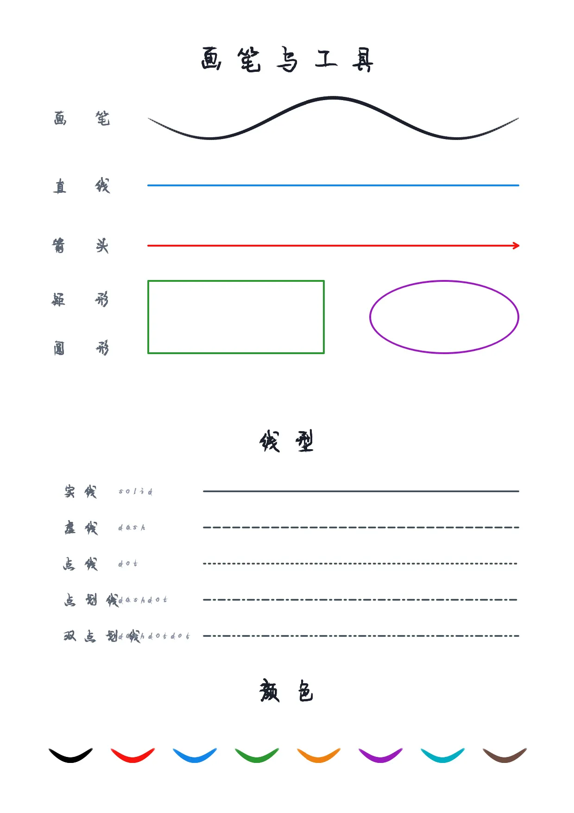
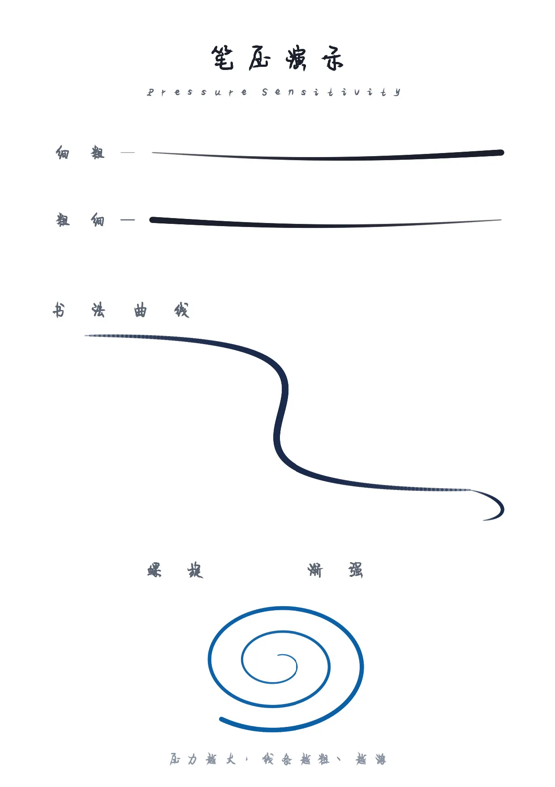
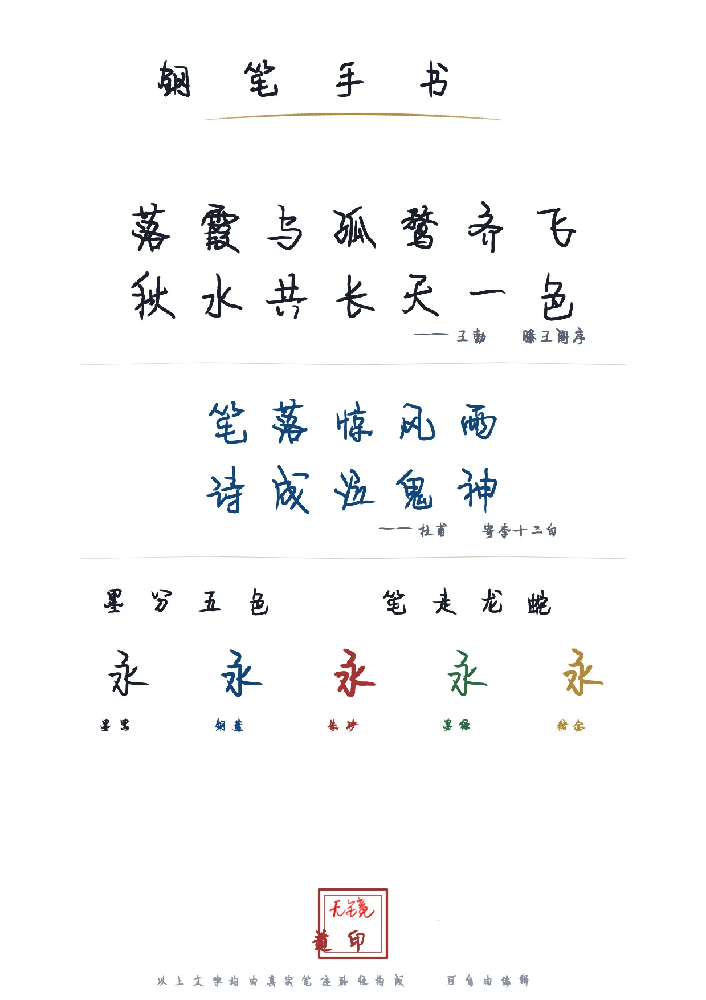

在易学授课、风水勘测、命理推演的过程中，随手画个卦象、标个方位、圈个重点—— 无镜道易学专用手写板 正是为易学从业者与爱好者量身打造的 Windows 桌面手写白板软件。 基于 Qt 6 + C++ 原生开发，性能流畅，支持数位板笔压感应， 配合系统托盘与全局快捷键，让每一次讲解都行云流水。
专为易学场景深度打磨，每一项功能都直击痛点
完美支持数位板笔压感应，线条粗细、透明度随压力自然变化。轻描淡写是细线，重笔强调则粗犷有力，书写体验接近真实纸笔。
presets.json 可调数字键 0-9 快速切换十组预设笔色、粗细与线型。黑色细笔标注、红色粗笔强调、虚线辅助线，指尖一按即刻切换。
0-9 快捷键矩形、圆形、箭头、直线，按住 Shift 还能画出正方形与正圆。画卦象、标方位、连关系，规范又高效。
P / R / O / A / L按 F 切换临时笔迹，写下的内容会在设定时间后自动淡出，适合课堂上的临时强调、随写随消。
F 键切换Ctrl+I 插入图片，或直接拖拽、粘贴。罗盘、卦图、照片均可轻松贴入，支持拖动、按比例缩放、自由旋转。
拖拽 / Ctrl+VShift+划过 擦除，Ctrl+划圈 圈选，Ctrl+A 全选。选中后可整体拖动、复制、剪切、删除，撤销重做最多 8 步。
Ctrl+Z / Ctrl+YCtrl+N 新建下一页，PageUp/PageDown 自由翻页。一节课多页内容，随时切换，逻辑清晰不混乱。
多页管理Ctrl+T 一键切换透明/不透明背景。透明模式下，白板可悬浮于其他软件之上，边看资料边画重点。
Ctrl+T保存为 .wbd 格式，完整保留所有页面、笔迹与贴图。导出 PNG 或 PDF，Ctrl+M 批量合并为 PDF。
直观感受无镜道易学专用手写板的强大功能与书写体验

桌面标注 · 手写批注 · 教学演示 · 笔压感应 —— 一站式易学手写解决方案

丰富的画笔工具、6 种线型（实线/虚线/点线/点划线/双点划线等）、8 种颜色预设，满足各类易学图示需求

完美支持数位板笔压感应，压力越大线条越粗越深，轻描淡写是细线，重笔强调则粗犷有力，书写体验接近真实纸笔

还原真实书写质感，墨黑、钢蓝、朱砂、墨绿、赭石五色随心切换，"落霞与孤鹜齐飞，秋水共长天一色"行云流水
全屏透明覆盖层，直接在桌面或任意程序之上书写标注
Ctrl+Alt+W 显示/隐藏白板
Ctrl+Alt+D 全屏透明标注
Ctrl+Alt+X 可点击桌面，笔迹保留
Esc 隐藏到托盘，干净利落
几乎所有操作都有快捷键，双手不离数位板，讲解行云流水
| 0 - 9 | 切换预设笔色 / 粗细 / 线形 |
| P / R / O / A / L | 普通画笔 / 矩形 / 圆形 / 箭头 / 直线 |
| F | 切换临时笔迹（自动淡出） |
| + / - | 临时调整当前笔宽（不影响预设，切预设后恢复） |
| Shift + 划过 | 删除划过的笔迹（笔画橡皮） |
| Ctrl + 划过 | 选中划过的笔迹 / 贴图 |
| Ctrl + 划圈 | 选中圈内全部笔迹 |
| Ctrl + A | 全选当前页所有笔迹 / 贴图 |
| Delete / Ctrl+Delete | 删除选中 / 清空当前页 |
| Ctrl+Z / Ctrl+Y | 撤销（最多 8 步）/ 重做 |
| Ctrl+C / Ctrl+X | 复制 / 剪切选中的笔迹 / 贴图 |
| Ctrl+N | 新建下一页 |
| Ctrl+S / Ctrl+Shift+S | 保存 / 另存为 |
| Ctrl+O | 打开 .wbd 文件 |
| Ctrl+E | 导出 PNG 或 PDF |
| Ctrl+M | 批量选择 wbd 文件合并为 PDF |
| Ctrl+R | 重新载入 presets.json |
| Ctrl + 滚轮 | 缩放画布（按视图中心） |
| Ctrl+0 | 恢复自动适配（按窗口宽度） |
| 滚轮 | 上下滚动页面；滚到边界自动翻页 |
| Space + 拖动 | 平移画布 |
| Alt + 拖动 | 移动窗口 |
| F11 | 全屏 / 退出全屏 |
| Ctrl+, / F2 | 打开参数配置界面 |
| F1 / H | 打开 / 关闭帮助 |
| Ctrl+T | 透明 / 不透明背景 |
| Ctrl+I | 插入图片 |
基于 Qt 6 原生渲染，高度可配置，代码结构清晰
原生性能，静态笔迹缓存，大页面多笔迹依旧顺滑
QOpenGLWidget 硬件加速渲染，智能重绘
.wbd = zip + JSON + WebP/PNG
多标签页配置界面，页面/笔压/预设/光标/托盘一目了然
A4 逻辑尺寸、透明模式、贴图旋转缩放，处处贴合易学讲解习惯。
几乎所有操作都有快捷键，双手不离数位板，讲解行云流水。
静态笔迹缓存、智能重绘、OpenGL 加速，大页面多笔迹依旧顺滑。
基于 Qt 6，presets.json 可视化配置，可根据自身需求灵活调整。
专为 Windows 平台深度优化，全局快捷键、系统托盘完美适配。
完美支持 Wacom 等数位板笔压，还原真实纸笔书写体验。
Windows 专用 · 绿色免安装 · 下载即用 · 支持数位板笔压